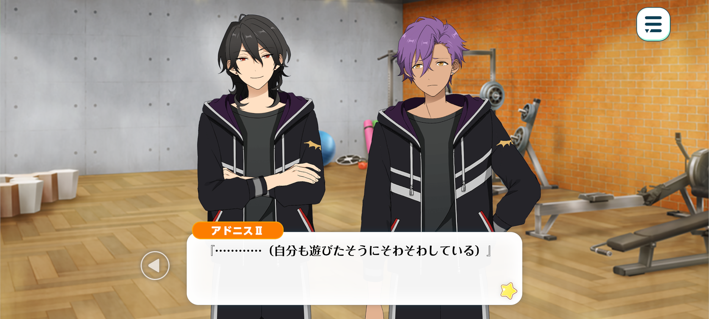
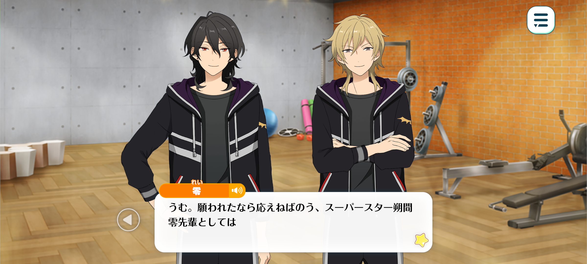

PSYCHOBREAK — Chapter 6


Time: That day at night
Location: Training Room in ES

Rei: Wanko~♪ Look at this adorable little ball~? Don’t you want it?
Go feeeetch, Wanko~ ☆
Koga 2: Ruff ruuuffffff ☆
Adonis 2: …(Fidgeting around like he wants to join in.)
Rei: Kukuku. They may look identical to the real them, but they're really only newborn babies. Aren't they adorable? ♪
Kaoru: It's nice to see you getting along surprisingly well with the fakes, but...
—Are you sure that's really a good thing, Rei-kun?
Rei: Now it's Adonis-kun's turn! ♪ How about a game of tug-of-war with this piece of string? It's a fun way to build up your physical strength. What could be better?
Adonis 2: ...♪
Kaoru: I'm glad you're getting along, but... Hello? Are you listening to me? Could you stop ignoring me, please?
Rei: Of course! I shall never again turn away from the eyes of my beloved children as they look up at me.
Kaoru: And who exactly is looking up to whom?
Rei: —There are a few things I've been pondering.
Kaoru: Hm?
Rei: Of course, whether I wish to be one or others wish me to be one, I am no all-knowing, all-powerful god. That much should be obvious from the fact that I failed to foresee this peculiar turn of events.
But I am a little older than the rest of you. It's not as though I spent all those years overseas doing nothing but playing whilst the cat was away.
I'm simply your slightly more experienced onii-chan, that's all.
Kaoru: And what's your point? Are you just trying to boast about being older? You know people don't like it when you try to pull rank on them because of your age, right? That's a form of power harassment, you know?
Rei: Kukuku. You're unusually on edge, Kaoru-kun. Though I suppose that's only natural, given the circumstances.
We must keep our minds as tranquil as a mountain peak. If we seniors allow ourselves to panic, our juniors will only grow more anxious.
Kaoru: I know. It's hard work, playing the part of a respectable senpai, isn't it?
So? What were those things you said you'd been pondering?
Rei: I don't have any concrete evidence at present, so I can't say for certain, but I believe I've more or less worked out what's behind our current predicament, and how we came to be in this situation.
I also have a general grasp of where things stand, though only in broad terms.
In other words, I believe I've begun to see the truth behind this mysterious predicament we've found ourselves in.
Kaoru: Ooh, impressive! Just as I'd expect from our very own great detective! ♪
Rei: I'm sure you've managed to work some of it out yourself, Kaoru-kun. After all, you're the son of a learned scholar.
However, you're a practical sort of person. A case involving elements that seem almost fantastical is probably rather difficult for you to wrap your head around.
Kaoru: Fantastical, huh...? Ah, I suppose that's a good way of putting it.
Rei: Indeed. The question now is how we're going to escape this predicament.
I'm sure you'll understand this metaphor, Kaoru-kun, but imagine that we're trapped in a locked room. There's only one way in or out, and we need a particular key to unlock the door.
However, that key is hidden somewhere amongst an endless assortment of objects scattered throughout the room.
Kaoru: So it's like an incredibly difficult escape-room puzzle.
Rei: Precisely. And we have no clues to guide us. Unfortunately, we simply don't have the time to examine every last object one by one in the hope of finding the key.
We must find some way out before the reality we inhabit begins to warp and fall apart.
Kaoru: Knowing you, you've already thought of a way to get us out of this, haven't you? Though I suppose that's partly wishful thinking on my part ♪.

Rei: Indeed. When someone makes a wish of me, I must do everything in my power to grant it. Such is the duty of superstar Sakuma Rei-senpai.
—There is something I wish to attempt.
However, it will be a dangerous gamble. I'm concerned it may place an enormous strain on the body and mind, or, more specifically, the brain.
Kaoru: Don't you dare say something all self-sacrificing like, “And that's why I'll handle it by myself.’ If it's a problem for UNDEAD, then it's a problem for all of us. We should share the burden.
Rei: Kukuku. That's not something the Kaoru-kun of old would ever have said. Perhaps it's precisely because we've just caught a glimpse of our past selves that those words carry such weight.
Kaoru: Don't make fun of me. So, what is it you want to do?
How do you suppose we can escape this bizarre situation?
Rei: We must dream.
When I investigated the AIIE testing facility the other day, I secretly took the equipment we'd been connected to, the medication we'd been prescribed, and, while I was at it, the manuals explaining how to operate it all.
There were so many technical terms that I struggled to make sense of them, but with a little help from a member of my family who's well versed in ‘such matters’, I managed to grasp the basic principles.
Which means that, if we wish to, we can once again dream of those days.
—Of the time when Deadmanz disappeared, and we, UNDEAD, awoke.
I suspect the answers we're looking for lie within those dreams.
Kaoru: So we're going to have that dream again, huh? It's embarrassing to think about how much I used to put on a tough act back then, but I suppose there's no helping it if this is our only option.
Rei: Your younger self was still rather adorably green, Kaoru-kun. As for me, I'm nothing but a walking embarrassment.
Though perhaps even the person I am now, looking back on my past self with such embarrassment, will become a source of shame to my future self ten years from now.
So that we may have as few regrets as possible when that day comes, let us do everything we can in the present.
Will you help me, Kaoru-kun?
Kaoru: Of course! I'll say it as many times as I need to: this is a problem for all of us.
Rei: Wonderful... This is still only a theory, but I suspect the root of this whole affair may lie with me.
The seeds I left neglected in the past, never once bothering to water them, have now sprouted through someone else's malice and begun to poison us. They are seeds I planted myself, so I must pull them out before they can grow any further.
So that I never make the same mistake again. So that I never lose anyone again.